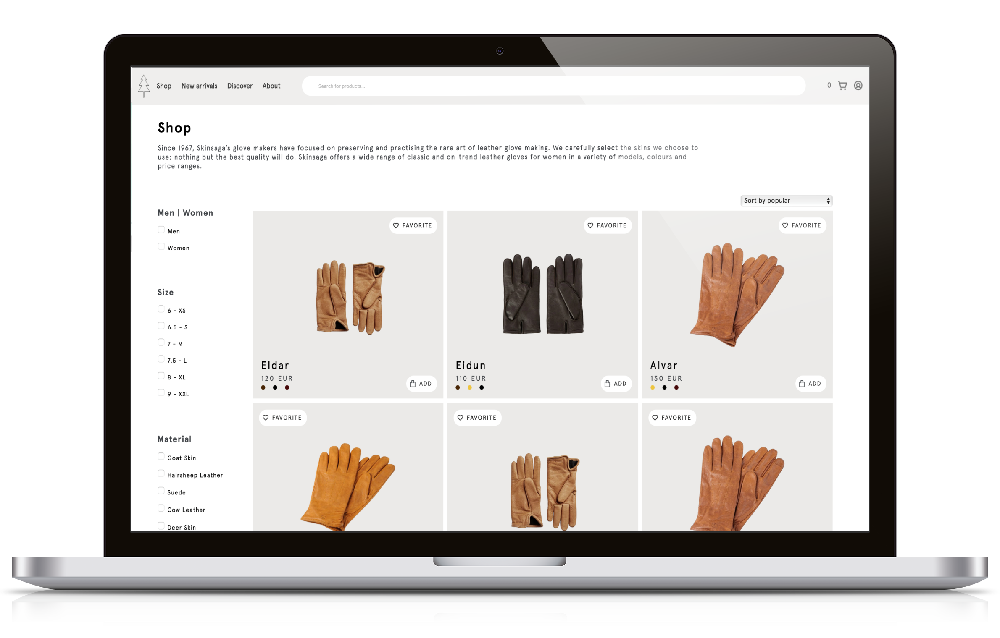

← All projects / Webshop Development
Group assignment
Webshop Development
In this group assignment, the task was to build a webshop based on the design in the UX-course. My group, consisting of four developers, decided to use my design for this purpose.

01
My Role
I was responsible for developing the following sections:
- New arrivals
- Discover
- Product page
- The entire shop-page except from sorting section
- Shopping basket some refinements, including counter
